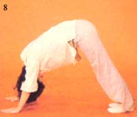

Salutation To The Sun
A graceful series of exercises, based on hatha yoga, can start your day right.
By the Mother Earth News editors
May/June 1982
On lazy summer mornings, it's often difficult to hop out of bed and plunge directly into a busy schedule. For that reason, many folks try to nudge their sleepy bodies into action with a few hurried toe touches or knee bends. Students of yoga, however (as well as many folks who have little more than a passing acquaintance with the practice), commonly start the day with a simple set of stretching movements designed to flex and energize every part of the body.
The Salutation to the Sun, as this morning ritual is called, consists of 12 positions which should be performed in one continuous, fluid sequence. Many of the poses are similar to the asanas of hatha yoga, but you don't have to be an expert yogi or yogini to benefit from the Sun Salutation. In fact, both novice and advanced practitioners often use this series as a warm-up for more intense yoga (or other exercise) routines. (For an introduction to hatha techniques, read Yoga for the Body and the Mind. -Mother)
Though the Salutation to the Sun - or Surya Namaskars, in Hindi - is traditionally performed at sunrise, it can be practiced whenever you rise (it should, however, be done while facing the morning sun), to get your day off to an eye-opening start. As an exercise series the Sun Salutation is an excellent overall vitalizer and toner, since each individual position exerts a beneficial effect on specific areas of the body. Once you've learned the procedure, you should pause - for just a second or two - in each position before moving on to the next stage. It's best to begin by performing two successive cycles, but you can repeat the sequence as many times as you wish, just as long as you move slowly and gracefully through the workout. (See Image Gallery for photos of each of the 12 positions.)
From Start to Finish
- The Salutation to the Sun is begun in a standing position, with the feet together at the edge of an exercise mat or carpet. Bend your arms at the elbows and place your palms together in front of your chest. Relax in this pose for a moment or two, then begin to inhale.
- As you continue to draw in that breath, move into the second position: Raise your arms high overhead and lean backward, arching your spine slightly.
- Then - while you exhale - bend forward from the waist and drop your head toward your knees (which should not be bent). Allow the weight of your torso to help you bring your hands to rest on the floor in front of your feet.
- The fourth position is again performed on an inhale. Keeping your hands in place, bend your left knee and stretch your right leg out behind you. Bend it slightly also, so that the knee rests on the floor, and flex the toes for a good "grip". Then arch your back and look upward.
- Next, exhale as you straighten the right leg and move your left limb back beside it. Push your buttocks up to form an inverted "V" with your body, and let your head hang loosely between your arms. Your back - from shoulders to hips - should be as straight as possible. Pull your stomach in toward the spine, and try to press your heels flat against the floor.
- As you move into the next pose, you'll need to hold your breath. Bend both arms at the elbows and lower your body carefully to the floor, with contact points at the forehead, chest, hands and knees. Keep your pelvis, abdomen, and thighs raised, and press your chin into the hollow at the base of your throat.
- Now, as you inhale, lower your pelvis and legs onto the floor, straighten your arms, arch your back, and let your head roll backward.
- With this position you begin to reverse the cycle and move back toward the starting point. As you exhale, thrust your hips high, forming the inverted V again.
- Next, inhale and move your right leg forward until that foot rests on the floor between your hands. Extend the left leg back, touching the floor with your knee, and lean your head back. (You'll notice that this pose is an alternate-leg version of No. 4.)
- As you exhale, bring the left foot up beside the right, then straighten both legs and drop your torso until your head approaches your knees again.
- Inhale and stand up straight as you stretch your arms high overhead.
- On the last exhale, bring your hands back together in front of your chest - to pay a final homage to the morning sun - and breathe freely for a few moments.
And there you are ... limber, relaxed and totally awake. What a way to start the day!
 MOTHER EARTH NEWS STAFF The first of the 12 positions of the Salutation to the Sun is a standing position, with the feet together at the edge of an exercise mat or carpet. |
MOTHER EARTH NEWS STAFF Raise your arms high overhead and lean backward, arching your spine slightly. |
MOTHER EARTH NEWS STAFF Then - while you exhale - bend forward from the waist and drop your head toward your knees (which should not be bent). Allow the weight of your torso to help you bring your hands to rest on the floor in front of your feet. |
|
MOTHER EARTH NEWS STAFF Keeping your hands in place, bend your left knee and stretch your right leg out behind you. Bend it slightly also, so that the knee rests on the floor, and flex the toes for a good "grip". Then arch your back and look upward. |
MOTHER EARTH NEWS STAFF Next, exhale as you straighten the right leg and move your left limb back beside it. Push your buttocks up to form an inverted "V" with your body, and let your head hang loosely between your arms. Your back - from shoulders to hips - should be as straight as possible. Pull your stomach in toward the spine, and try to press your heels flat against the floor. |
MOTHER EARTH NEWS STAFF Bend both arms at the elbows and lower your body carefully to the floor, with contact points at the forehead, chest, hands and knees. Keep your pelvis, abdomen, and thighs raised, and press your chin into the hollow at the base of your throat. |
 MOTHER EARTH NEWS STAFF As you inhale, lower your pelvis and legs onto the floor, straighten your arms, arch your back, and let your head roll backward. |
 MOTHER EARTH NEWS STAFF As you exhale, thrust your hips high, forming the inverted V again. |
MOTHER EARTH NEWS STAFF Inhale and move your right leg forward until that foot rests on the floor between your hands. Extend the left leg back, touching the floor with your knee, and lean your head back. |
|
MOTHER EARTH NEWS STAFF Bring the left foot up beside the right, then straighten both legs and drop your torso until your head approaches your knees again. |
MOTHER EARTH NEWS STAFF Inhale and stand up straight as you stretch your arms high overhead. |
MOTHER EARTH NEWS STAFF On the last exhale, bring your hands back together in front of your chest (to pay a final homage to the morning sun) and breathe freely for a few moments. |